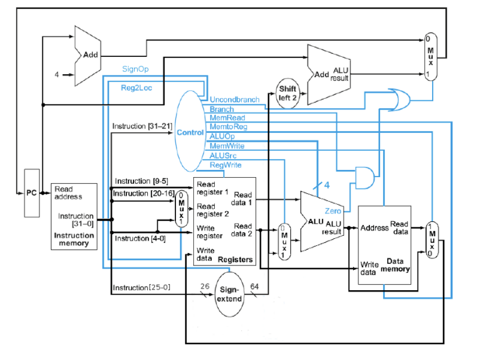

Home
Portfolio
Qualifications
Service
Projects Completed
Built an Audio Amplifier
In a previous course of mine, we were assigned a final project to
complete. My team and I decided to build an 3 stage audio amplifier using
bipolar transistors. This was a huge challenge itself, spending several
days designing the circuit and simulating until our simulation results
were up to our expectations. Below is the circuit that our team eventually
designed.

Wrote a Processor in Verilog
Another completed project I am proud of is making a CPU entirely in
verilog. The design of the CPU is dated, from the late 80s, but the
overall concepts do apply to modern day processors. You can see the layout
of the CPU below.

View my
GitHub Here
for other smaller coding projects/assignments I have completed.